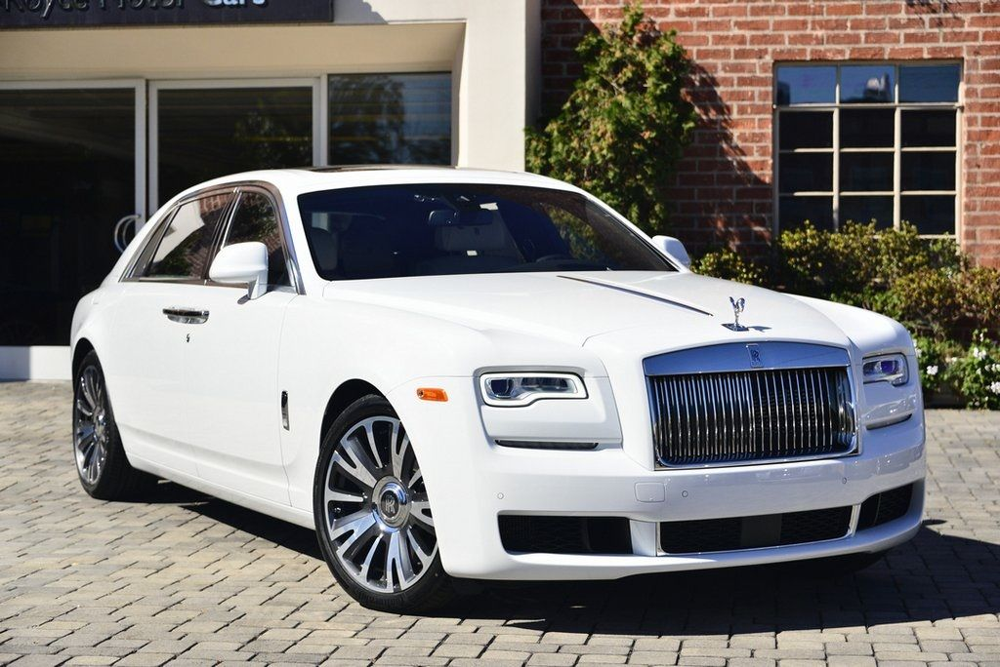

Limuzyny
Nadwozie zamknięte, czterodrzwiowe. Klasyczny układ napędowy. Może mieć od czterech do kilkunastu miejsc siedzących, czasem dwa lub trzy dodatkowe składane siedzenia. Siedzenia z przodu: kierowcy i pasażera mogą być oddzielone od tylnej części kabiny (siedzenia "VIP") szybą lub ścianką - wtedy nazywamy to samochodem dual cowl. Mianem limuzyny określić można również samochód luksusowy o nadwoziu typu sedan, takim jak np. BMW serii 7, Mercedes-Benz klasy S czy Lincoln, w których brak ścianki z szybą oddzielającej siedzenia kierowcy i pasażera od tylnych miejsc przeznaczonych dla klientów.
Limuzyny jako samochody luksusowe są standardowo wyposażone w barek, radio z CD, klimatyzację, telefon pomiędzy kierowcą a kabiną, często też telewizor z DVD. Popularne, szczególnie w Stanach Zjednoczonych, jest przebudowywanie sedanów oraz SUV-ów na limuzyny.
Obecnie określenie "limuzyna" uległo częściowej dewaluacji i używa się go do ogólnego określenia auta klasy wyższej, o nadwoziu typu sedan.
Limuzyny jako samochody luksusowe są standardowo wyposażone w barek, radio z CD, klimatyzację, telefon pomiędzy kierowcą a kabiną, często też telewizor z DVD. Popularne, szczególnie w Stanach Zjednoczonych, jest przebudowywanie sedanów oraz SUV-ów na limuzyny.
Obecnie określenie "limuzyna" uległo częściowej dewaluacji i używa się go do ogólnego określenia auta klasy wyższej, o nadwoziu typu sedan.
GALERIA:

